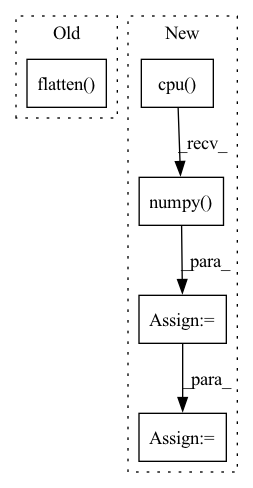

Pattern ID :6499
Before Change
if SHOW_JOINT_HIST:
plt.figure(figsize=(14, 4))
plt.subplot(1, 3, 1)
plt.hist2d(fastmarch_output.flatten() , geodistkraster_output.flatten(), bins=50)
plt.xlabel("Fast Marching")
plt.ylabel("GeodisTK")
plt.title("Joint histogram\nFast Marching vs. GeodisTK")After Change
)
tic = time.time()
toivanenraster_output = np.squeeze(
FastGeodis.generalised_geodesic2d_toivanen(input_image_pt, seed_image_pt, v, lamb, iterations).cpu().numpy()
)
toivanenraster_time = time.time() - tic
tic = time.time()
fastraster_output_cpu = np.squeeze(
FastGeodis.generalised_geodesic2d(input_image_pt, seed_image_pt, v, lamb, iterations).cpu().numpy()
)
fastraster_time_cpu = time.time() - tic
device = "cuda" if torch.cuda.is_available() else None
if device:
input_image_pt = input_image_pt.to(device)
seed_image_pt = seed_image_pt.to(device)
tic = time.time()
fastraster_output_gpu = np.squeeze(
FastGeodis.generalised_geodesic2d(input_image_pt, seed_image_pt, v, lamb, iterations).cpu().numpy()
)
fastraster_time_gpu = time.time() - tic
print("Runtimes:")
print(
"Toivanen"s CPU raster: {:.6f} s \nFastGeodis CPU raster: {:.6f} s".format(
toivanenraster_time, fastraster_time_cpu
)
)
if device:
print("FastGeodis GPU raster: {:.6f} s".format(fastraster_time_gpu))
plt.figure(figsize=(18, 6))
plt.subplot(2, 4, 1)
plt.imshow(image, cmap="gray")
plt.autoscale(False)
plt.plot([seed_pos[0]], [seed_pos[1]], "ro")
plt.axis("off")
plt.title("(a) Input image")
plt.subplot(2, 4, 2)
plt.imshow(toivanenraster_output)
plt.axis("off")
plt.title("(b) Toivanen"s Raster (cpu) | ({:.4f} s)".format(toivanenraster_time))
plt.subplot(2, 4, 3)
plt.imshow(fastraster_output_cpu)
plt.axis("off")
plt.title("(c) FastGeodis (cpu) | ({:.4f} s)".format(fastraster_time_cpu))
plt.subplot(2, 4, 6)
plt.imshow(toivanenraster_output)
plt.axis("off")
plt.title("(d) Toivanen"s Raster (cpu) | ({:.4f} s)".format(toivanenraster_time))
if device:
plt.subplot(2, 4, 7)
plt.imshow(fastraster_output_gpu)
plt.axis("off")
plt.title("(e) FastGeodis (gpu) | ({:.4f} s)".format(fastraster_time_gpu))
diff = (
abs(toivanenraster_output - fastraster_output_cpu) / (toivanenraster_output + 1e-7) * 100
)
plt.subplot(2, 4, 4)In pattern: SUPERPATTERN
Frequency: 4
Non-data size: 5
Instances Fragment ID: 22534614
Project Name: masadcv/fastgeodis
Commit Name: a1906e989649c1f0b8fdbed147c1d576ac5c41f3
Time: 2022-07-22
Author: muhammad.asad@kcl.ac.uk
File Name: samples/demo2d.py
M Class Name: AnonimousClass
N Class Name: AnonimousClass
M Method Name: evaluate_geodesic_distance2d(2)
N Method Name: evaluate_geodesic_distance2d(2)
M Parent Class:
N Parent Class:
M File Name: samples/demo2d.py
N File Name: samples/demo2d.py
M Start Line: 29
M End Line: 158
N Start Line: 18
N End Line: 100
Before Change
logits_adv = self._adversary.forward(
observation, deterministic, return_log_prob=True
)[-1]
logits_pi = logits_pi.detach().cpu().numpy().flatten()
logits_adv = logits_adv.detach().cpu().numpy().flatten()
return action, log_pi, adv_log_pi, logits_pi, logits_adv
return action, log_pi, adv_log_pi
After Change
params_adv = params_adv.detach().cpu().numpy().flatten()
else:
mean = actor_distrib.mean.detach().cpu().numpy().flatten()
scale = actor_distrib.scale.detach().cpu().numpy() .flatten()
params_pi = np.concatenate([mean, scale], -1)
mean = adversary_distrib.mean.detach().cpu().numpy().flatten()
scale = adversary_distrib.scale.detach().cpu().numpy().flatten()
params_adv = np.concatenate([mean, scale], -1) Fragment ID: 22534550
Project Name: yfletberliac/adversarially-guided-actor-critic
Commit Name: 4958ecb8ca6e7e344852f7aa9fc8668cd8cd074b
Time: 2021-07-07
Author: cibeah.cb@gmail.com
File Name: agac_torch/agac/agac_ppo.py
M Class Name: PPO
N Class Name: PPO
M Method Name: select_action(3)
N Method Name: select_action(4)
M Parent Class:
N Parent Class:
M File Name: agac_torch/agac/agac_ppo.py
N File Name: agac_torch/agac/agac_ppo.py
M Start Line: 115
M End Line: 138
N Start Line: 121
N End Line: 146
Before Change
// No grad ok?
with th.no_grad():
action, value, log_prob = self.policy.forward(obs)
action = action.flatten() .cpu().numpy()
// Rescale and perform action
// TODO: clip only when using Box action spaceAfter Change
while n_steps < n_rollout_steps:
with th.no_grad():
actions, values, log_probs = self.policy.forward(obs)
actions = actions.cpu().numpy()
// Rescale and perform action
clipped_actions = actions
// Clip the actions to avoid out of bound error
if isinstance(self.action_space, gym.spaces.Box):
clipped_actions = np.clip(actions, self.action_space.low, self.action_space.high)
new_obs, rewards, dones, _ = env.step(clipped_actions)
n_steps += 1 Fragment ID: 22534612
Project Name: dlr-rm/stable-baselines3
Commit Name: 255ff10bfffdccaf7193772d46e0c2df6cf36a9b
Time: 2019-09-20
Author: antonin.raffin@dlr.de
File Name: torchy_baselines/ppo/ppo.py
M Class Name: PPO
N Class Name: PPO
M Method Name: collect_rollouts(6)
N Method Name: collect_rollouts(6)
M Parent Class: BaseRLModel
N Parent Class: BaseRLModel
M File Name: torchy_baselines/ppo/ppo.py
N File Name: torchy_baselines/ppo/ppo.py
M Start Line: 84
M End Line: 108
N Start Line: 91
N End Line: 101
Before Change
pred = torch.ones_like(scores)
pred[scores <= .5] = 0
y_pred = pred.cpu().numpy().flatten()
auc_scores = scores.detach().cpu().numpy().flatten()
res = {
"accuracy": accuracy_score(y_true, y_pred),
"auc": roc_auc_score(y_true, auc_scores).astype(float) if len(set(y_true)) > 1 else .5,After Change
}
if scores.shape[1] == 2:
auc_scores = scores[:, 1].detach().cpu().numpy() .flatten()
if len(set(y_true)) == 2:
res["auc"] = roc_auc_score(y_true, auc_scores).astype(float)
else:
res["auc"] = 0.5 //TODO: warning
return res Fragment ID: 22534637
Project Name: makgyver/gossipy
Commit Name: 31a93a404f8bfba3869c5eb733962a438f4806f0
Time: 2021-08-29
Author: mak1788@gmail.com
File Name: gossipy/model/handler.py
M Class Name: TorchModelHandler
N Class Name: TorchModelHandler
M Method Name: evaluate(2)
N Method Name: evaluate(2)
M Parent Class: ModelHandler
N Parent Class: ModelHandler
M File Name: gossipy/model/handler.py
N File Name: gossipy/model/handler.py
M Start Line: 93
M End Line: 103
N Start Line: 99
N End Line: 123